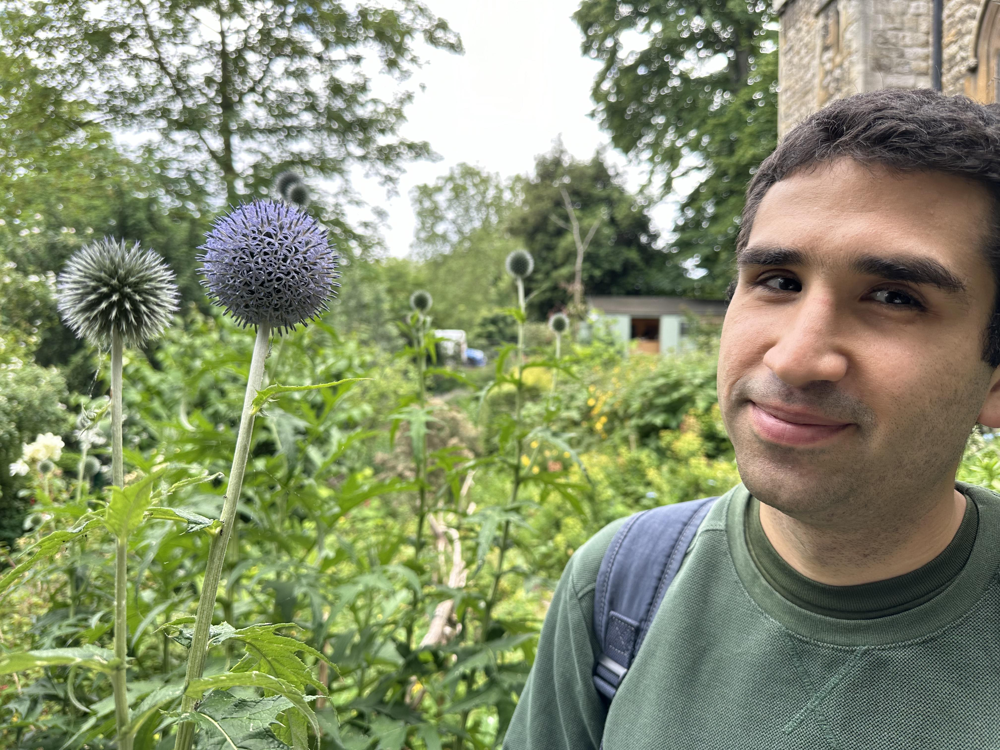
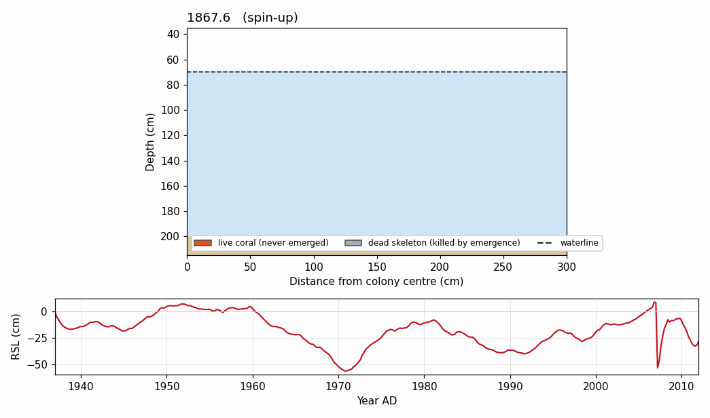

Aug 2024 – present
PhD Geophysics
University of Texas at Austin, Jackson School of Geosciences, USA

I am a PhD candidate in geophysics at the University of Texas at Austin, Jackson School of Geosciences, working on tectonics, paleogeodesy, paleoclimate and biogeology.
I use corals as natural instruments for measuring past earthquakes. My dissertation reconstructs how the New Georgia Island Group megathrust in the Solomon Islands deforms between and during earthquakes, using stable isotopes measured along coral cores together with satellite radar geodesy (InSAR).
Before Austin I studied geology and geophysics at the University of Bonn, and worked as a meteorologist and data analyst on wind atlas modelling in Germany.
My research combines numerical models, coral geochemistry, satellite radar geodesy and climate reanalysis to understand how the solid Earth, ocean and atmosphere record change.
Focus areas
Corals as natural instruments
Massive corals grow upward until they reach the sea surface and then stop, which makes them sensitive recorders of both ocean climate and land motion. A colony that is lifted during an earthquake dies back to the new waterline and leaves a dated surface in its own skeleton; one that subsides catches up by growing vertically again.
My dissertation reads that record along the New Georgia Island Group megathrust in the Solomon Islands, where the 2007 Mw 8.1 earthquake uplifted reefs across the island group. Stable isotopes recorded in the coral's skeleton deliver a temporally high-resolution time series. I developed a new proxy for relative water depth to reconstruct the vertical tectonic change captured in the coral's tissues.
A two-dimensional cellular automaton grows a coral colony under a prescribed relative sea-level history. The rules describe lateral extension, vertical catch-up during submergence, mortality on emergence, recolonisation and erosion.

Oxygen isotopes measured at high resolution along a core through a coral head track sea-surface temperature and salinity, giving an independent, seasonally resolved chronology for the same colony the growth model describes.
Comparing that series against sea-surface salinity separates the climate signal from the land-motion signal, so that the remaining deformation history can be read against satellite radar geodesy over the instrumental period.
Further work
Across the 1950–2025 ERA5 record, the Indian monsoon shows a regional pattern of change rather than a uniform national shift. Rainfall has declined along the west coast, in northeast India and in the Himalayan foothills, while central and peninsular India show little change.
At Goa, onset remains in early-to-mid June but withdrawal has moved about 12 days later since the 1950s, stretching the season even as overall intensity declines.
An academic path across two continents, from engineering geology to megathrust geodesy.
Aug 2024 – present
University of Texas at Austin, Jackson School of Geosciences, USA
Sep 2020 – Aug 2023
University of Bonn, Germany · GPA 3.3
Oct 2016 – Sep 2020
University of Bonn, Germany · GPA 3.2
Sep 2026 – Feb 2027
University of Texas at Austin, USA
Jun 2025 – Aug 2026
UT Austin, Jackson School of Geosciences, USA
Jan 2025 – May 2025
University of Texas at Austin, USA
Nov 2023 – Aug 2024
anemos Gesellschaft für Umweltmeteorologie mbH, Lüneburg, Germany · Wind Atlas Department
Sep 2022 – Aug 2023
Institute for Applied Mathematics, University of Bonn, Germany · R exercises
Mar 2021 – Jul 2023
Institute of Geophysics, University of Bonn, Germany
May 2019 – Jul 2020
Ingenieurteam Dr. Hemling & Gräfe GmbH, Germany · Engineering Geology & Hydrogeology
Languages
Software
Outside the lab
Water polo · Bouldering · Classical guitar · Cinema · Literature · Cooking
Always open to discussing research collaborations, geology and new scientific frontiers.